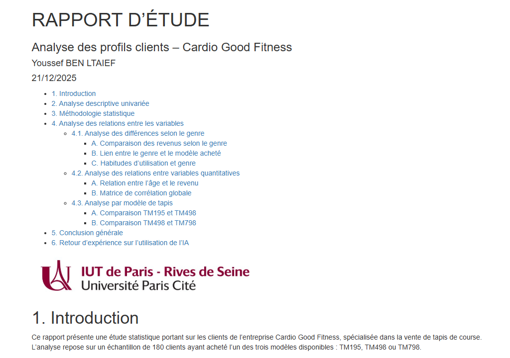
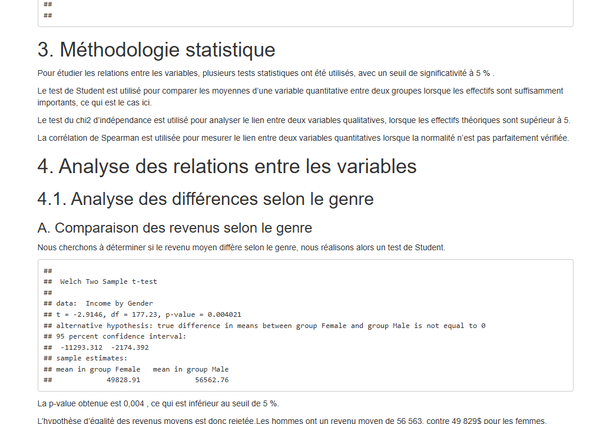

| Nom de la SAE | Tests statistiques et analyse exploratoire (CardioGoodFitness) | |||
| Sujet spécifique | Analyse du profil des clients d'une marque de fitness (CardioGoodFitness) : étude des variables influençant le choix du modèle de tapis de course (TM195, TM498, TM798) et l'utilisation du produit. |
| Objectifs |
Explorer et décrire les données (statistiques descriptives, visualisations). Créer des variables synthétiques (niveau d'éducation, catégorie d'usage). Réaliser des tests statistiques (test du chi², ANOVA, corrélations). Produire un rapport structuré et reproductible avec R Markdown. |
| Livrables | Rapport R Markdown (.Rmd), rapport HTML, script R |
| Compétence | Analyser |
| Apprentissages critiques sollicités | AC22.01 : Sélectionner les méthodes statistiques adaptées à la problématique |
| AC22.02 : Mettre en œuvre les méthodes statistiques | |
| AC22.03 : Analyser et interpréter les résultats produits | |
| Composantes essentielles à respecter | Choisir les bons tests selon la nature des variables (quantitatives / qualitatives). |
| Vérifier les conditions d'application avant chaque test. | |
| Interpréter les résultats en lien avec la problématique métier. |
| Compétence | Valoriser |
| Apprentissages critiques sollicités | AC23.04 : Prendre conscience de la rigueur requise dans ses productions et la communication |
| AC23.03 : Choisir des indicateurs pertinents pour communiquer sur les résultats | |
| Composantes essentielles à respecter | Rapport clair et structuré produit avec R Markdown (texte + code + graphiques intégrés). |
| Sélectionner les visualisations pertinentes (corrplot, GGally, ggplot2). |
| Savoirs / connaissances | Savoir-faire | Savoir-être |
|---|---|---|
|
Tests du chi² (variables qualitatives). ANOVA, test de Student (comparaison de moyennes). Corrélation de Pearson / Spearman. Visualisation : ggplot2, GGally, corrplot. Recodage et création de variables (cut, case_when). |
Importer et préparer des données R (factor, cut, case_when). Créer des sous-groupes par produit (TM195, TM498, TM798). Réaliser et interpréter des tests statistiques avec R. Produire un rapport Rmd intégrant texte, code et graphiques. |
Rigueur statistique (ne pas conclure sans vérifier les conditions). Autonomie dans l'analyse et la rédaction. Esprit critique sur les résultats obtenus. Communication claire des conclusions. |
Ce que je trouve bien réalisé, pourquoi ?
L'analyse est bien structurée : on part des statistiques descriptives, on crée des variables synthétiques (Niv, Usage_cat), puis on réalise les tests. Les visualisations (GGally, corrplot) sont pertinentes et aident à comprendre les relations entre variables. Le rapport R Markdown est reproductible et lisible.
Ce que je n'ai pas bien compris ; ce qui serait à améliorer pour une prochaine fois : pourquoi ? comment ?
La vérification des conditions d'application (normalité, homogénéité des variances) n'a pas toujours été systématique. Pour une prochaine fois : ajouter des tests préliminaires (Shapiro-Wilk, Levene) avant chaque test paramétrique ; mieux justifier le choix de chaque test dans le rapport.

